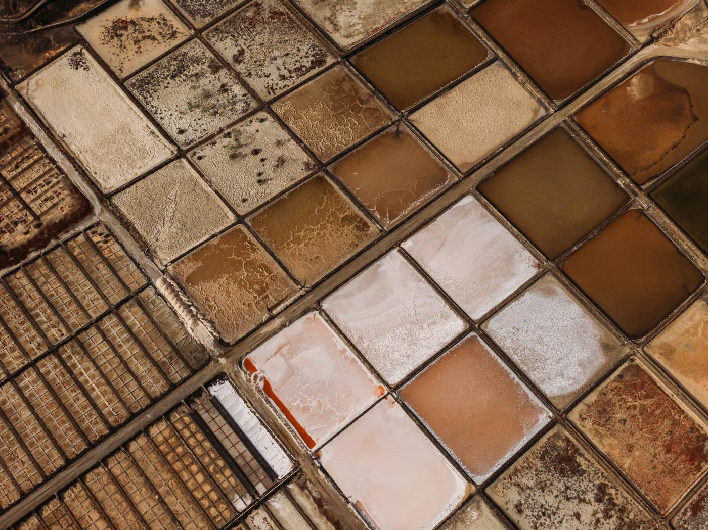
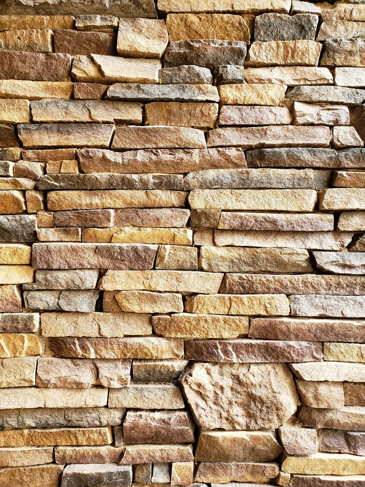
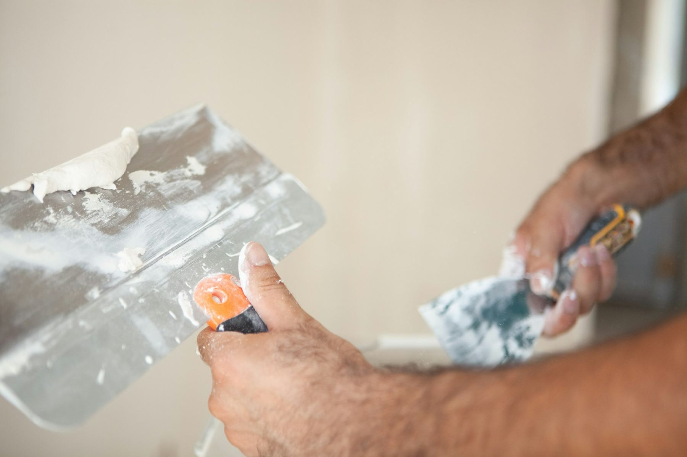
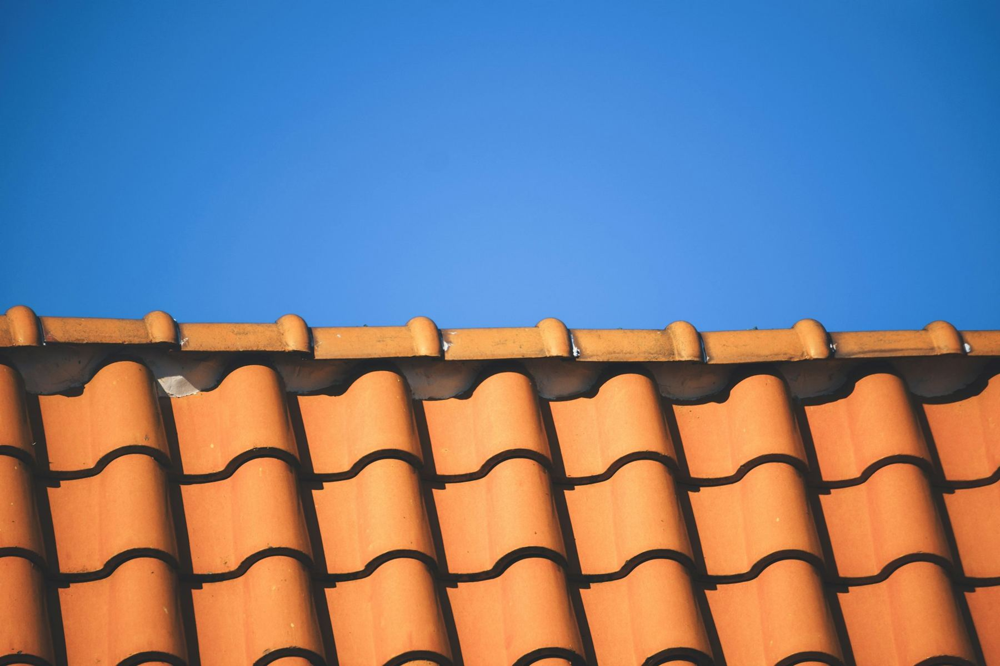
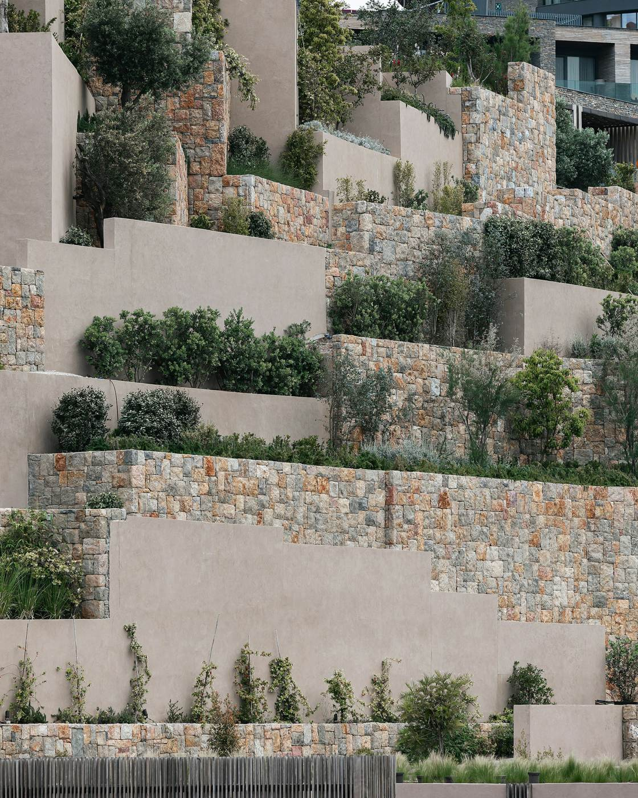

Savoir-faire
Six métiers, une même exigence.
Une entreprise tous corps d'état pour la rénovation de votre maison, de la fondation aux finitions.

Marbre et carrelage
Fourniture et pose de marbre, terre cuite, carrelage et faïence, au sol comme au mur, à l'intérieur comme en terrasse.

Pierre de taille
Murs en pierre, pierre sèche, piliers et taille de pierre, dans le respect du bâti provençal.

Maçonnerie générale
Neuf et rénovation, agrandissement, ouvertures, dalles et murs : tous corps d'état.

Piscine et mosaïque
Construction et rénovation de bassins, plages, margelles et habillage en mosaïque.

Toiture et façade
Réfection de toiture, maçonnerie de toit et réfection de façade.

Terrassement
Préparation des terrains, accès, restanques et fondations.
Nos petits plus
Ce qui fait la différence
- Un artisan de proximité
- Des finitions soignées
- Estimation financière
- Diagnostic et conseil
- Étude architecte et ingénieur
Questions fréquentes
Avant de nous appeler
Le devis est-il gratuit ?
Oui. Nous venons voir le chantier, nous vous conseillons et vous recevez une estimation claire avant de commencer.
Fournissez-vous le carrelage ou le marbre ?
Oui, nous assurons la fourniture et la pose. Vous pouvez aussi choisir vos matériaux de votre côté.
Travaillez-vous avec un architecte ?
Pour les projets qui le demandent, une étude par un architecte et un ingénieur peut être organisée.
Quels moyens de paiement ?
Virement bancaire, chèque ou espèces.
Devis gratuit
Un projet pour votre maison ?
Nous venons voir sur place, nous vous conseillons, et vous recevez un devis gratuit.